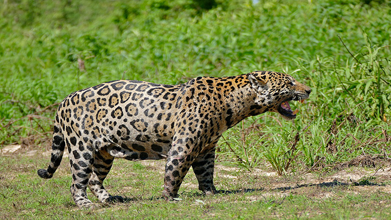

Alguns animais que habitam as florestas
De acordo com a altura e o tipo de vegetação, uma superfície de floresta ou arborizada pode abrigar diferentes espécies.
Vamos falar sobre alguns interessantes animais que vivem aqui:
1. Guaxinim
Também são conhecidos como ratos-lavadeiros, e são originários da América. Medem cerca de 50 centímetros e sua pelagem geralmente é cinza no lombo, branco nas patas e com listras no rabo.
Parece que estão de óculos pelas manchas escuras ao redor dos olhos.
Esse mamífero vive perto dos rios e usa sua destreza com as patas dianteiras para comer rãs e frutos.
 2. Macaco aranha
2. Macaco aranha
Entre as espécies de macacos, vale destacar que esse é muito inteligente, e além disso está entre os mais acrobáticos do mundo.
Usa seu rabo como se fosse um membro a mais para poder se equilibrar de árvore em árvore.
Devido à destruição das florestas, se encontra entre as espécies em perigo de extinção.
 3. Pica-pau
3. Pica-pau
É conhecido por sua cabeça vermelha e sua capacidade para picar os troncos em busca de insetos, larvas e vermes.
Alguns são sedentários e outros migram de acordo com a região onde vivem e, além disso, ficam no ninho em cavidades escavadas por eles mesmos nas árvores.
Sobre a reprodução do pica-pau, é preciso ressaltar que os ovos são incubados durante duas semanas, enquanto os pintinhos gerados levam mais um mês para deixarem o ninho.

4. Lince
O lince também é conhecido como Boreal, Euroasiático, Europeu ou, somente, como lince comum.
Trata-se de um felino de tamanho médio que acampa pelas florestas europeias e siberianas. De corpo carnudo, rabo curto e pelagem pardo ou amarelado, o lince é um excelente trepador e saltador.
A época do acasalamento se dá entre janeiro e março, e os machos também cuidam dos filhotes.

5. Cervo
O lince também é conhecido como Boreal, Euroasiático, Europeu ou, somente, como lince comum.
Trata-se de um felino de tamanho médio que acampa pelas florestas europeias e siberianas.
De corpo carnudo, rabo curto e pelagem pardo ou amarelado, o lince é um excelente trepador e saltador.
A época do acasalamento se dá entre janeiro e março, e os machos também cuidam dos filhotes.
6. Urso pardo
Seu habitat natural são as florestas da América do Norte, Ásia e Europa.
A esperança de vida fica em torno de 30 anos e sua pelagem pode ser marrom escuro ou dourado claro.
Pode erguer-se com as patas traseiras, e guia-se pelo olfato e audição. Pela alimentação, é classificado como onívoro. No inverno, hiberna em tocas.
Os ursinhos vivem com a mãe um ano e meio.

7. Jaguar
Esse felino lindo, também conhecido como onça pintada, habita as florestas da América e se parece com um leopardo.
De caráter solitário, o jaguar caça fazendo emboscadas e sua mordedura é mais potente do que a de qualquer outro predador, pois pode até perfurar cascos de tartarugas.

8. Coruja
A coruja usa as árvores como lar durante a maior parte de sua existência.
Essa ave de tamanho grande, cuja esperança de vida é de 60 anos, pode chegar a 75 centímetros de altura e 1,7 metros de envergadura quando abre as asas.
Tem hábitos noturnos e seu uivo pode ser ouvido a dois quilômetros de distância.
Por outro lado, vivem sozinhos até a época de acasalamento, quando a fêmea põe até seis ovos e os incuba nos troncos das árvores, enquanto o macho busca alimento: roedores, coelhos, esquilos, pombas, ratas, etc. Todo esse processo dura 36 dias.